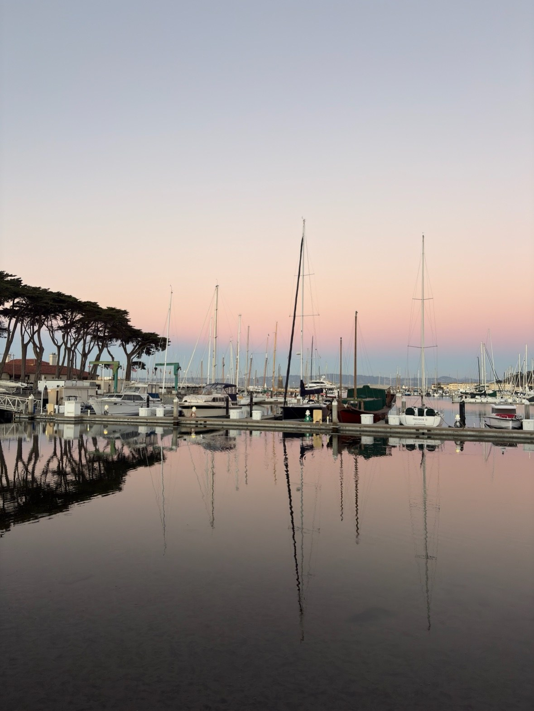
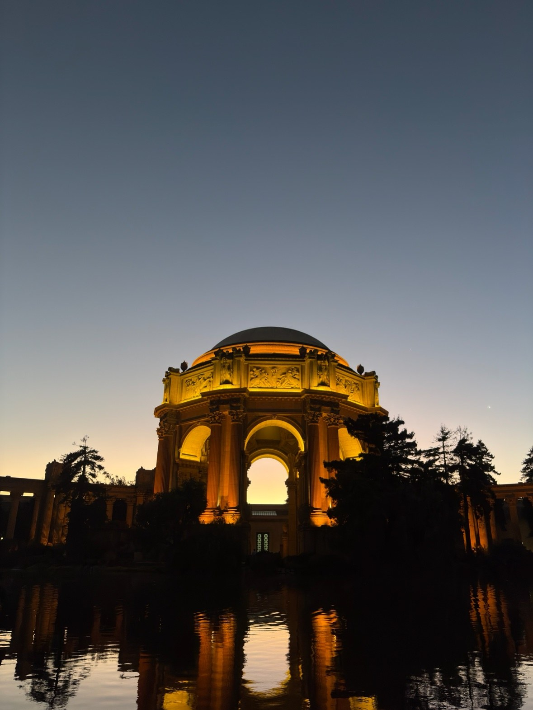
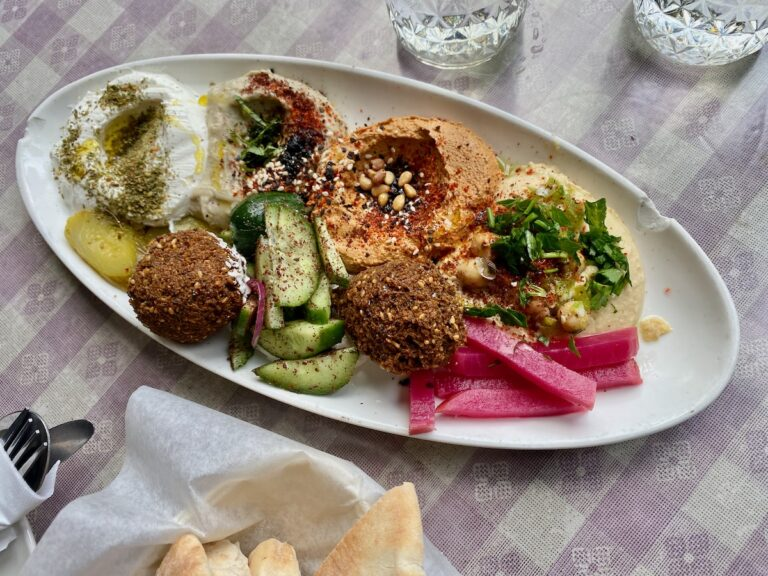
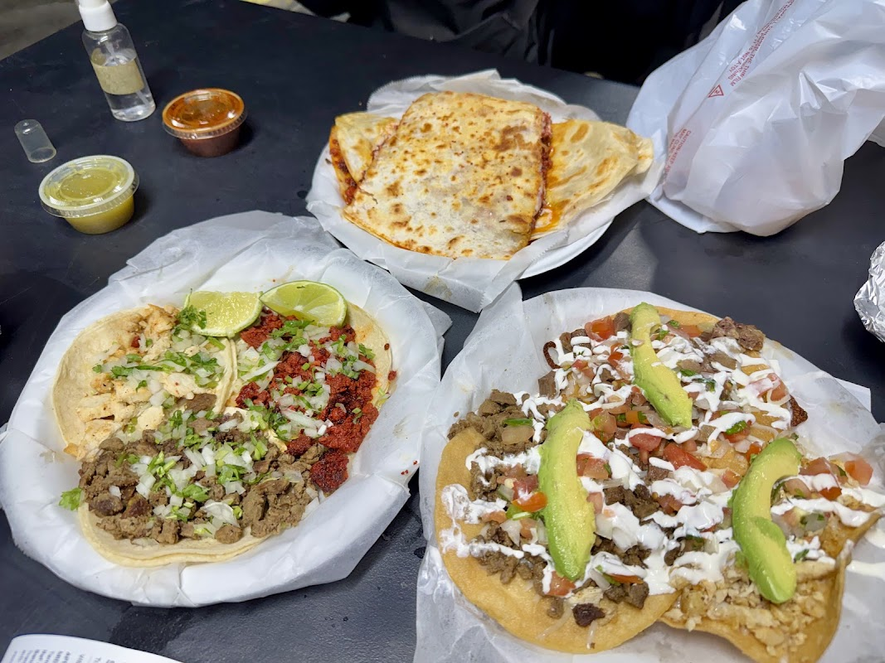

you just landed here, and the good stuff is all yours now

the city that fed me, now it feeds you too

the Palace at dusk
Hey, welcome home (your new one)
You just landed here, and I am so glad you did. The Bay gave me some of my favorite meals and some of my favorite days, and now they are yours. This is my list, in order, the tables I would send you to first and the drives worth taking on a free Saturday.
No gatekeeping here. Start at the top, work your way down, bring people you like, and order the thing I told you to order. When you find your own favorites, add them to the list and pass it on.
Go hungry. The keys are yours now.
Love, Namkhang
Swipe through the cards. Each one has the address, what to order, what it costs, and how to get in. The little beli rail on the side is my ranking, number 1 is the top.
Order this: the omakase, and let the counter run. My mom came with me and said she did not know Japanese food could taste like this. She was right.
Why it is special: a perfect 10 from me, the only one I have given. A quiet counter, course after course of nigiri and small plates, and the meal that turned my mom into a believer.
Order this: the beef brisket. It literally melted in my mouth, and dipped in their house vinegar sauce it took the smokiness to another level. I have never had something come together like that in my entire life, it ruined the rest of the meal. The wagyu bulgogi was good too.
Why it is special: a perfect 10 from me. The brisket alone is worth the trip, and the room is loud, fun, and built for a group dinner.
Order this: the skirt steak, the best steak I have ever had, and the flaky fish, a twist on the classic with a deep sauce that had a multitude of flavors. Come hungry and let the presentation do its thing.
Why it is special: my 9.9, with a best of SF tag to match. Modern Cantonese where every plate feels like a small ceremony, and the hardest table on this list to book.
Lower Nob Hill, San Francisco · Hawaiian-Asian fusion
beli 9.9about $83 ppResy, book aheadMon-Sat, 5-9 PM
Order this: the porkchop and the black cod, my two favorites. The poke was unique, and the bite was nice. And the baked Hawaii, always.
Why it is special: my birthday dinner, with my SF friends, a year after I landed here and found this community. 9.9 from me, and the warmest room on this list.
Order this: the duck curry, my favorite dish here. The duck was beautifully cooked and the curry lathered onto the white rice simply melts in your mouth. My friend said we should have ordered 20 of them. The steak was super smoky too, and the short rib tallow fried rice is still the dish I keep thinking about.
Why it is special: my 9.9, and the dinner I finally got to try after hearing about it for months. A small, loud, joyful room in West Portal. Expect a 45-60 minute wait at peak, it is worth it. These two photos are from my own table.
Order this: the $17 lobster roll, it cannot be beat. Simply an incredible amount of quality for the price. And the cioppino, built for sharing. Oysters are $1.25 on Tuesdays. Note: the Market St location is permanently closed, go to Fillmore.
Why it is special: my 9.8, and the neighborhood anchor that punches way above its price. No fuss, no line games, just a great East Coast style seafood counter that always delivers.
Order this: the Chicken with Explosive Chili Pepper ($35), a plate of fried chicken buried in dried red chilies, the tea-smoked duck, and fish filet in flaming chili oil. The green beans and eggplant are the sleeper hits. Order family style and share everything.
Why it is special: my 9.8, with a best of SF tag to match. The first Sichuan restaurant in Chinatown, and the chef cooked for the Chinese consulate in San Francisco. The explosive chicken is the dish to beat.
Know before you go: lunch 11:30 AM-3 PM, dinner 4:30-9 PM, closed Tuesdays. Book ahead, walk-ins waited 45 minutes on weekends. Peanuts show up in a few dishes, so flag allergies up front.
Order this: the tasting menu, start to finish. My order, course by course: Kir Breton, brioche with house-made butter, pretzel and dips, dry-aged black cod, Dungeness crab broth, abalone with caviar, and the Sugar Bee Apple to close.
Why it is special: three Michelin stars, and the best restaurant I have ever been to. Pescatarian menu, and I have been three times. 97% of people who went would recommend it, and I am one of them.
Sunnyvale · upscale Korean BBQ (second spot in Los Altos)
about $60-100 ppReservations recommendedLunch 11:30 AM-2:30 PM, dinner 5-9 PM
Order this: Butchers Bulgogi, marinated Galbi, Nakji Pajeon (octopus pancake), wagyu galbi mandoo, black pork belly, and A5 wagyu if you are feeling it. The staff grills everything for you, so you just eat.
Why it is special: the rare KBBQ where you never touch the tongs. It is polished without being stiff, and it is my favorite South Bay dinner, worth the drive down.
Ferry Building, Embarcadero, San Francisco · fish market and seafood counter
lunch under $20Walk-in, no reservationsSun-Fri 11 AM-8 PM, Sat 10 AM-8 PM
Order this: smoked trout and corn chowder, the fried rockfish sandwich, fish and chips, steamed mussels, and grab oysters to take home. It is counter service, so order at the counter and find a sunny spot.
Why it is special: the Ferry Building's freshest lunch counter, from the Nopa team. Opened in June 2025 and already my default Saturday stop. Grab oysters for home on your way out.
Ferry Building, Shop 31, 1 Ferry Bldg, San Francisco · Open in Maps
beli#11mezze spread

order the whole spread
#11 Beit Rima
Castro and Cole Valley, San Francisco · Arabic comfort food
about $25-35 ppCounter service11 AM-9 PM, Fri-Sat to 9:30
Order this: the mezze sampler ($24, with lebna, muhammara, baba ganoush, hummus, and falafel), Samir's hand-kneaded bread ($7), chicken shish tawook plate ($26), musakhan, batata harra ($11), and baked halloumi ($16).
Why it is special: the mezze spread that turns a weeknight into a feast. Warm, generous, and made for sharing, my go-to when friends come over and nobody can agree on anything.
138 Church St or 86 Carl St, San Francisco · Open in Maps
beli#121 AM tacos
late night only

the 1 AM taco run
#12 Spartan Taco Truck
San Jose, near SJSU · late-night taco truck
about $10-15 ppCash or VenmoNightly, about 8:30 PM-2 AM
Order this: little crispy tacos (3 for $10), big crispy tacos with steak, super soft al pastor, lengua, tripa, quesabirria, and a peanut butter horchata to wash it down.
Why it is special: the 1 AM taco run. Crispy shells, generous fillings, no regrets. Bring cash or Venmo and bring friends, this is a group ritual, not a solo mission.
about $56 ppReservations recommendedSun-Thu 11 AM-9:15 PM, Fri-Sat to 10:15 PM
Order this: patatas bravas ($10), crab croquetas ($12), tuna tacos ($18), pulpo Teleferic ($22), the paella negra (the number one paella), paella mixta, jamon iberico de bellota ($26), and wagyu empanadas ($18). The Barcelona Lunch is $28-34 on weekdays.
Why it is special: the paella and the patio. Two hundred plus Spanish wines, a big sunny patio, and the best excuse to spend an afternoon in Los Gatos.
50 University Ave, Suite B270, Los Gatos · Open in Maps
Do this: walk Carmel Beach (dogs run off-leash here), wander Ocean Ave and the fairytale cottages, then drive the 17-Mile Drive to the Lone Cypress. The drive fee is refunded if you spend $35 or more at a Pebble Beach restaurant.
Know before you go: Point Lobos State Natural Reserve is open 8 AM-7 PM with last entry at 6:30 PM, and only 150 cars get in, so arrive before 9:30 AM or after 3 PM.
The highlight: Point Lobos, where Jacques Cousteau said land and water meet at their greatest. Sea otters, seals, and cypress groves in one small park.
About 1 hour north of SF (36 miles to the Bear Valley Visitor Center)
Free entry, no parking feeBest: Sep-Oct, or Jan-Apr for whales
Do this: hike the Tomales Point Trail (about 9.5 miles round trip) for near-guaranteed tule elk, climb the 300 plus steps to the 1870 lighthouse, find the Cypress Tree Tunnel, and watch elephant seals at Chimney Rock from December to March.
Know before you go: pack layers, it can be 30 degrees colder than inland. Dogs are banned on trails and beaches. The lighthouse stairs are open Friday to Monday, 10 AM-4 PM, and close in high wind. Parking fills late on whale-season weekends, when a shuttle runs.
The highlight: tule elk on Tomales Point, especially during the rut from August to October. Gray whales pass by from January to April.
Parking reservation required, $10/carEntry $15 pp, ages 16+Best: early morning
Do this: walk the main boardwalk loop through old-growth coast redwoods, find Cathedral Grove, and take the longer trails up to the ridge if you want a workout.
Know before you go: book parking at GoMuirWoods.com up to 90 days ahead. You get a 30-minute arrival window and there is no walk-up parking. Download your confirmation first, there is no cell service in the canyon. The shuttle ($4 round trip) is seasonal and returns in spring 2027.
The highlight: standing under thousand-year-old redwoods, twenty minutes from the city. It never gets old.
About 3 hours 12 minutes east of SF (187 miles to South Lake)
Best: Feb-Mar ski, Jun + Sep summerFull lake loop: about 3h driving
Do this: ski Heavenly, Palisades Tahoe, Northstar, or Kirkwood in winter (Heavenly opens Nov 20, 2026). In summer, swim at Sand Harbor, hike down to Emerald Bay and Vikingsholm, and drive the full 72-mile lake loop.
Know before you go: in winter, check Caltrans QuickMap the morning of, chain controls hit I-80, US-50, and SR-89, and storms can add 1-3 hours, so carry chains or drive AWD. In summer, Sand Harbor needs a day-use reservation from May 15 to Sep 30, and the Emerald Bay lot fills by 9 AM on weekends. July and August are extremely crowded, September is the sweet spot.
The highlight: Emerald Bay at golden hour. The bluest water in California, and it earns every bit of the drive.